Problématique : Peut-on toujours fédérer les acteurs de l’organisation ?
Capacités visées :
☐ Identifier les différents acteurs dans les organisations et leurs intérêts respectifs.
☐ Apprécier le degré de concentration du pouvoir de décision.
☐ Reconnaître les différents types et styles de direction.
☐ Identifier les modalités de coopération dans une organisation.
☐ Distinguer les facteurs de motivation.
☐ Distinguer les différentes modalités de communication mobilisées par une organisation.
1. Pourquoi faut-il fédérer les acteurs de l’organisation ?
1.1. Coop’Rive : des intérêts qui ne coïncident pas toujours
1.1.1. Repérer les attentes des acteurs
Document 1 – Coop’Rive doit choisir l’usage d’une enveloppe de 240 000 €
| La SCOP de transport adapté emploie 135 personnes. Trois projets sont en concurrence : une prime exceptionnelle, le renouvellement de huit véhicules ou une plateforme numérique de réservation. | |
|---|---|
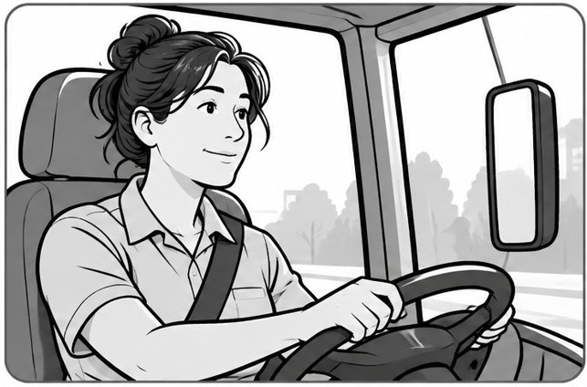 Une conductrice : « Sur certaines tournées, les véhicules vieillissants sont fatigants et les immobilisations nous mettent en difficulté. » |
Un salarié associé : « Avec la hausse des prix, beaucoup attendent un geste sur le pouvoir d’achat. » |
|
La direction : « Deux contrats importants seront renouvelés cette année ; nos partenaires regarderont aussi notre capacité à moderniser le service. » |
Une responsable de secteur : « La planification génère encore trop d’erreurs, mais un nouvel outil imposera de former les équipes. » |
Question 1
Réponse sur feuille — reprenez le numéro de la question dans votre réponse. |
|---|
Afficher la correction
Éléments attendus : la conductrice cherche de meilleures conditions de travail et moins d’immobilisations ; le salarié associé recherche notamment une amélioration de son pouvoir d’achat ; la direction cherche à sécuriser les contrats et à moderniser le service ; la responsable de secteur veut réduire les erreurs tout en anticipant la formation nécessaire.
Convergence à ne pas oublier : ces intérêts immédiats diffèrent, mais les acteurs ont aussi un intérêt commun à la pérennité et à la prospérité de l’entreprise. Le maintien de l’activité protège les emplois et les revenus ; le développement de l’entreprise peut permettre de meilleures rémunérations et, pour les salariés associés, soutenir la valeur de leur participation au capital.
1.1.2. Analyser les intérêts : convergences et divergences
Notion 1 – Intérêts divergents, convergents et action de fédérer
Intérêt : ce qu’un acteur cherche à obtenir, préserver ou éviter dans une situation donnée. Convergence d’intérêts : situation dans laquelle plusieurs acteurs ont des intérêts compatibles ou allant dans la même direction sur un point donné. Divergence d’intérêts : situation dans laquelle les intérêts de plusieurs acteurs s’opposent ou conduisent à privilégier des choix différents.
Des acteurs peuvent converger sur certains objectifs tout en divergeant sur d’autres. Des intérêts différents ne sont donc pas nécessairement divergents : ils peuvent rester compatibles et contribuer à une même action collective. |
|---|
 Fédérer : réussir à faire
agir ensemble des acteurs différents dans une même direction, au service
d’une action collective.
Fédérer : réussir à faire
agir ensemble des acteurs différents dans une même direction, au service
d’une action collective.1.1.3. Réinvestir ces notions dans une autre organisation
Question 2
À partir du document précédent et en vous aidant des définitions des notions, identifiez une convergence et une divergence d’intérêts entre des acteurs précis. Justifiez chacune de vos réponses à l’aide d’un élément du document. Réponse sur feuille — reprenez le numéro de la question dans votre réponse. |
|---|
Afficher la correction
Convergence : la conductrice, le salarié associé, la responsable de secteur et la direction ont tous intérêt à la pérennité de Coop’Rive : elle conditionne le maintien de l’emploi, des revenus et de l’activité ; pour les salariés associés, elle soutient aussi la valeur de leur participation.
Divergences : les acteurs ne privilégient pas le même usage des 240 000 €. Le salarié associé privilégie une prime pour améliorer immédiatement le pouvoir d’achat ; la conductrice privilégie le renouvellement des véhicules pour améliorer les conditions de travail ; la responsable de secteur met en avant la réduction des erreurs et la nécessité de former les équipes ; la direction privilégie la modernisation du service et la sécurisation des contrats. Les divergences doivent donc toujours être reliées à des acteurs précis et à un intérêt identifié.
Document 2 – Une association de recyclerie et d’insertion
L’association exploite une recyclerie qui collecte des objets destinés à être jetés, les trie, les rénove puis les revend à faible prix. Des personnes éloignées de l’emploi y sont embauchées en contrat d’insertion et participent aux activités de collecte, remise en état et vente. Les salariés permanents assurent l’accompagnement des personnes en insertion, l’organisation de l’activité et les relations avec les partenaires. L’association travaille notamment avec une communauté d’agglomération et des organismes de formation. La recyclerie est aussi un acteur local du développement durable : en une année, plusieurs centaines de tonnes d’objets ont été collectées ; une partie a été revendue, une autre orientée vers des filières de recyclage. Elle accueille également plusieurs dizaines de milliers de clients par an. Le projet vise à la fois l’insertion vers l’emploi, le réemploi d’objets et l’accès à des biens d’occasion à coût réduit. |
|---|
Question 3
À partir du document n°2, montrez que les acteurs internes peuvent poursuivre des intérêts individuels différents tout en ayant des intérêts convergents. Réponse sur feuille — reprenez le numéro de la question dans votre réponse. |
|---|
Afficher la correction
Réponse attendue : dans la recyclerie, les acteurs internes ne poursuivent pas exactement les mêmes intérêts individuels. Les personnes en contrat d’insertion cherchent notamment à acquérir une expérience, développer leurs compétences et retrouver progressivement un emploi durable ; les salariés permanents cherchent à réussir l’accompagnement, organiser efficacement l’activité et maintenir de bonnes relations avec les partenaires ; les responsables de l’association cherchent à assurer la pérennité de la structure et la réalisation de ses finalités sociales et environnementales.
Ces intérêts sont différents par leur objet, mais ils ne sont pas nécessairement opposés. Ils convergent largement vers la réussite du projet associatif : le bon fonctionnement de la recyclerie permet à la fois l’insertion, le réemploi et la continuité de l’activité. Différence d’intérêts ne signifie donc pas divergence d’intérêts.
À retenir 1 – Pourquoi faut-il fédérer les acteurs de l’organisation ?
Une organisation réunit des acteurs aux rôles, attentes et intérêts différents. Le management doit identifier ces intérêts afin de s’appuyer sur les convergences et de tenir compte, arbitrer ou rendre compatibles certaines divergences. Il cherche ainsi à les acteurs, c’est-à-dire à les faire agir ensemble dans une direction compatible avec les objectifs de l’organisation et l’action collective. Le management doit identifier ces intérêts afin de s’appuyer sur les et de tenir compte, arbitrer ou rendre compatibles certaines . C’est le rôle du de créer des conditions favorables à l’action collective et d’inciter les acteurs à contribuer aux objectifs de l’organisation. Réponse sur feuille — reprenez le numéro de la question dans votre réponse. |
|---|
Afficher la correction
Une organisation réunit des acteurs aux rôles, attentes et intérêts différents. Le management doit identifier ces intérêts afin de s’appuyer sur les convergences et de tenir compte, arbitrer ou rendre compatibles certaines divergences. Il cherche ainsi à fédérer les acteurs, c’est-à-dire à les faire agir ensemble dans une direction compatible avec les objectifs de l’organisation et l’action collective.
Le management doit identifier ces intérêts afin de s’appuyer sur les convergences et de tenir compte, arbitrer ou rendre compatibles certaines divergences.
C’est le rôle du management de créer des conditions favorables à l’action collective et d’inciter les acteurs à contribuer aux objectifs de l’organisation.
2. Comment le management peut-il fédérer les acteurs de l’organisation ?
2.1. Observer comment circule l’information
Document 3 – Différentes situations de communication dans l’organisation
| Réunion d’information : la responsable présente les nouveaux horaires, explique une consigne de sécurité et répond aux demandes de précision. | Boîte à idées et entretien : plusieurs conducteurs signalent une difficulté récurrente et proposent une modification de tournée à leur responsable. | Groupe projet : exploitation, service clients et informatique confrontent leurs contraintes et modifient ensemble le calendrier de déploiement. |
|---|---|---|
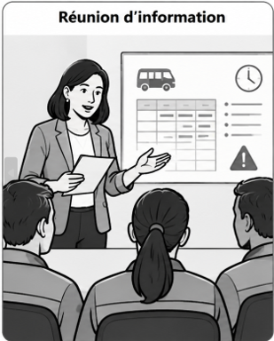 |
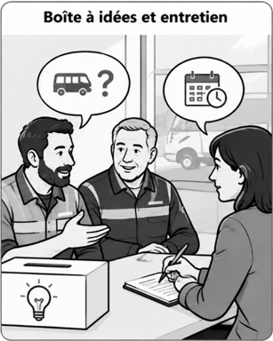 |
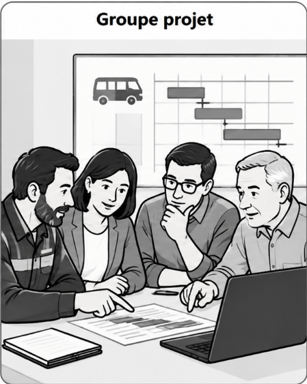 |
Rappel 1 – Lien de subordination
Question 4
À l’aide du document 3 :
Réponse sur feuille — reprenez le numéro de la question dans votre réponse. |
|---|
Afficher la correction
Repérage : réunion d’information = flux du supérieur vers les subordonnés ; boîte à idées / entretien = remontée des salariés vers la hiérarchie ; groupe projet = échanges entre métiers et services sans que le lien hiérarchique organise principalement l’échange.
2.2. Qualifier le sens de la communication
Notion 2 – Sens de communication
Communication descendante : de la hiérarchie vers les subordonnés ; elle peut transmettre décisions, objectifs, consignes, informations ou retours. Outils possibles : réunion d’information, note, messagerie, intranet, affichage. Communication ascendante : des subordonnés vers la hiérarchie ; elle permet de faire remonter difficultés, alertes, propositions, opinions ou besoins. Outils possibles : boîte à idées, entretien, questionnaire, réunion, messagerie ou formulaire. Communication transversale / horizontale : entre acteurs, services ou fonctions sans que le lien hiérarchique structure principalement l’échange ; elle facilite coordination, partage et ajustements. Outils possibles : groupe projet, réunion de coordination, messagerie collaborative, documents partagés ou RSE.
|
|---|
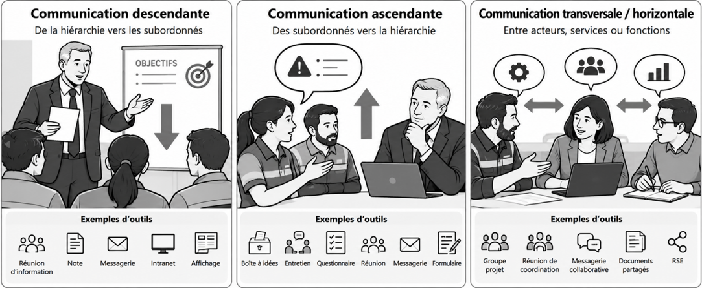 |
Question 5
En vous aidant de la Notion 2, qualifiez le sens de communication des différentes situations de communication du document 3. Justifiez votre réponse. Réponse sur feuille — reprenez le numéro de la question dans votre réponse. |
|---|
Afficher la correction
Qualification : descendante pour la transmission de consignes ou informations hiérarchiques ; ascendante pour les remontées de difficultés, avis ou propositions ; transversale/horizontale pour la coordination entre acteurs ou services. La justification porte sur le sens réel du flux.
2.3. Pouvoirs et styles de direction
2.3.1. Différentes manières de diriger
Document 4 – Différents styles de management
Situation 1 Le fondateur conserve la main sur les choix stratégiques et tranche lui-même les décisions importantes. Il connaît personnellement une grande partie des salariés, suit leurs difficultés et peut accorder une aide, une récompense ou un aménagement lorsqu’il estime qu’un effort particulier a été fourni. Les relations sont décrites comme très proches et l’entreprise insiste sur son « esprit de famille ». En revanche, les changements d’organisation majeurs restent décidés au sommet. |
Situation 2 Avant certaines décisions, la direction réunit des responsables de plusieurs métiers, organise des séances de remue-méninges et sollicite l’avis de groupes de salariés. Les collaborateurs disposent aussi d’une autonomie réelle dans leur travail quotidien et sont encouragés à proposer des améliorations. Toutefois, les arbitrages stratégiques, les investissements et les décisions engageant l’ensemble de l’organisation restent validés par la direction. |
|---|---|
Situation 3 Des comités réunissent des salariés de différents niveaux hiérarchiques et de plusieurs services. Dans le cadre d’objectifs et de budgets fixés à l’avance, ces équipes peuvent choisir certaines solutions, prendre des décisions opérationnelles et organiser elles-mêmes leur mise en œuvre. La direction conserve les grandes orientations mais délègue une partie effective du pouvoir de décision. |
Situation 4 La responsable est décrite comme charismatique et son autorité est peu contestée. Elle entretient des relations de proximité avec les salariés, suit attentivement les résultats et intervient rapidement lorsqu’un écart apparaît. Les équipes savent précisément ce qu’elle attend et disposent de peu d’espace pour remettre en cause ses choix. |
Question 6
Lisez avec soin chaque situation du document 4 puis :
Réponse sur feuille — reprenez le numéro de la question dans votre réponse. |
|---|
Afficher la correction
Réponse attendue :
Situation 1 : les salariés disposent de peu de pouvoir de décision ; le dirigeant conserve les choix importants, même s’il entretient une relation de proximité avec eux.
Situation 2 : les salariés sont consultés et peuvent proposer des améliorations, mais les décisions stratégiques restent prises par la direction.
Situation 3 : les salariés disposent d’une réelle autonomie pour certaines décisions opérationnelles dans un cadre fixé par la direction.
Situation 4 : la responsable conserve une forte maîtrise de la décision et du contrôle ; les salariés disposent de peu d’espace pour remettre en cause ses choix.
L’élément essentiel à observer est donc qui détient réellement le pouvoir de décision final et quelle autonomie est accordée aux collaborateurs.
2.3.2. Qualification des styles de direction
Notion 3 – Styles de direction, modèle de Rensis Likert
Style de direction : manière dont un dirigeant exerce son pouvoir et organise ses relations avec les collaborateurs. Il se repère notamment à travers la confiance accordée, la façon de motiver, le sens de la communication, la répartition du pouvoir de décision, la fixation des objectifs et la relation hiérarchique. Concentration du pouvoir : elle s’apprécie en observant qui détient réellement la décision finale et quelles marges de décision sont laissées ou déléguées aux collaborateurs. Les styles de direction selon Rensis Likert :
Le tableau constitue la grille de lecture : la qualification d’un style repose sur plusieurs indices convergents, et non sur un seul critère. |
|---|
Question 7
À partir du document n°4, qualifiez le style de direction dominant dans chaque situation et justifiez chacune de vos réponses à l’aide d’indices précis du document. Réponse sur feuille — reprenez le numéro de la question dans votre réponse. |
|---|
Afficher la correction
Qualification attendue : 1 = paternaliste ; 2 = consultatif ; 3 = participatif. Pour 4, paternaliste peut être retenu si la proximité et la logique protectrice sont mises en avant ; autoritaire peut également être accepté si la justification insiste sur l’autorité peu contestée, le contrôle et la faible marge de discussion.
2.3.3. Existe-t-il un style de direction idéal ?
Notion 4 – Style de direction et contingence de la situation
Contingence : principe selon lequel une pratique de management n’est pas adaptée à toutes les situations ; sa pertinence dépend du contexte. Le contexte peut notamment dépendre de l’urgence, des compétences et de l’expérience des salariés, de leur autonomie, de la complexité du problème ou du besoin d’innovation. |
|---|
Document 5 – Style de direction et contexte
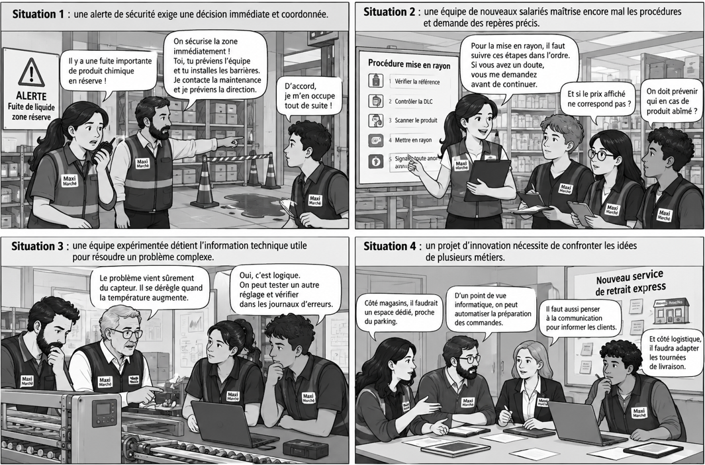 |
|---|
Question 8
En vous appuyant sur le document n°5, expliquez pourquoi il n’existe pas de style de direction idéal. Réponse sur feuille — reprenez le numéro de la question dans votre réponse. |
|---|
Afficher la correction
Réponse attendue : aucun style de direction n’est adapté à toutes les situations. Le document montre que le contexte peut conduire à privilégier des pratiques différentes : l’urgence peut nécessiter une décision plus centralisée ; des salariés peu expérimentés peuvent avoir besoin d’un encadrement plus directif ; une équipe experte gagne à être consultée ; un projet innovant peut nécessiter davantage de participation et d’autonomie. La pertinence d’un style dépend donc du contexte : il n’existe pas de style de direction idéal en toutes circonstances.
Question 9
Réponse sur feuille — reprenez le numéro de la question dans votre réponse. |
|---|
Afficher la correction
Qualification et appréciation possibles : situation 1 : un style autoritaire peut être retenu et paraît pertinent, car l’urgence de sécurité exige rapidité, centralisation et consignes précises ; situation 2 : un style paternaliste ou autoritaire peut être défendu si l’on insiste sur le besoin de repères et d’encadrement de nouveaux salariés ; situation 3 : un style consultatif est pertinent, car l’équipe expérimentée détient l’information technique utile, même si la décision finale peut rester au manager ; situation 4 : un style participatif est pertinent, car l’innovation nécessite de confronter plusieurs expertises et de construire les choix collectivement. Une autre qualification ou appréciation est recevable si elle est justifiée par des indices du contexte.
Astuce 1 – Comprendre le verbe apprécier
| Astuce : Apprécier, c’est porter un jugement argumenté à partir de critères précis. Ici : qualifier le style → repérer les caractéristiques du contexte → expliquer en quoi le style est adapté ou non → nuancer si un autre choix est défendable. |
|---|
2.4. Leadership : influence et autorité ne se confondent pas
Notion 5 – Leadership vs autorité hiérarchique
Autorité hiérarchique : pouvoir formel lié à une position dans l’organisation. Elle permet notamment de donner des ordres ou des instructions, d’en contrôler l’exécution et, le cas échéant, de sanctionner les manquements. Leadership : capacité d’un individu à influencer, entraîner ou guider un groupe vers un objectif, sans supposer nécessairement une position hiérarchique. |
|---|
Document 6 – Nadia, une leader naturelle
| Lorsqu’une situation épineuse se produit dans l’entreprise, ses
collègues se tournent naturellement vers Nadia, afin qu’elle les aide à
prendre la meilleure décision. 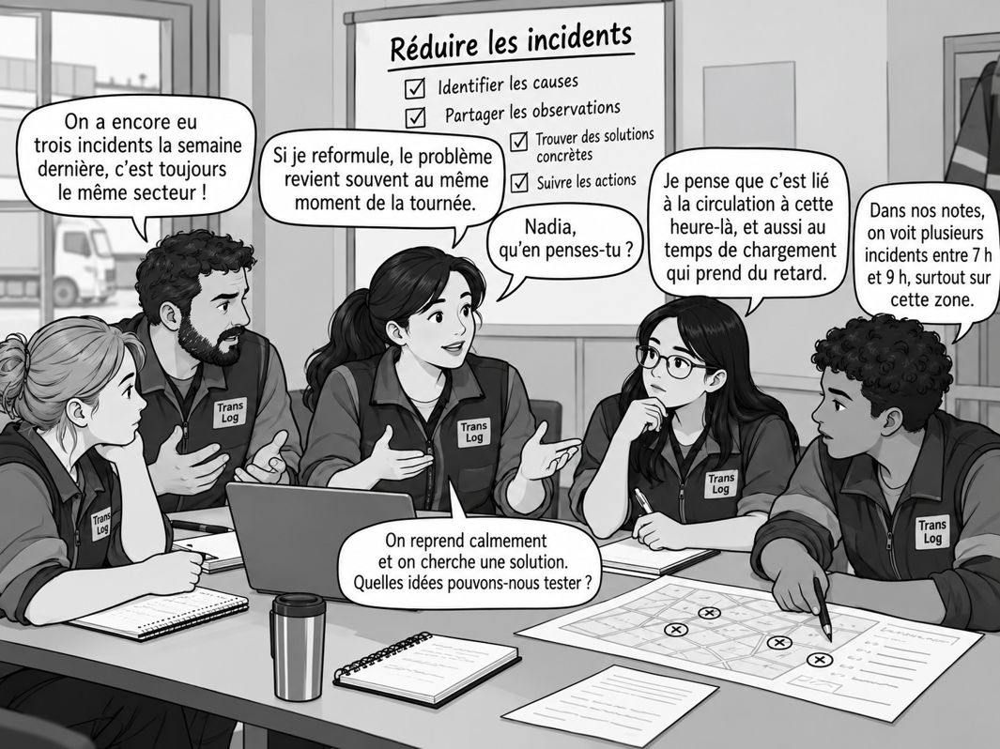 |
|---|
Question 10
En vous appuyant sur la notion 5 et le document 6, distinguez l’autorité hiérarchique du leadership, puis montrez qu’ils peuvent tous deux influencer le fonctionnement d’un groupe par des mécanismes différents. Réponse sur feuille — reprenez le numéro de la question dans votre réponse. |
|---|
Afficher la correction
Réponse attendue : l’autorité hiérarchique repose sur un pouvoir formel lié à la position occupée dans l’organisation : elle permet de donner des instructions, d’en contrôler l’exécution et éventuellement de sanctionner. Le leadership repose au contraire sur une capacité d’influence qui peut exister sans pouvoir hiérarchique. Dans le document n°6, Nadia n’est la supérieure d’aucun membre du groupe, mais elle influence son fonctionnement en reformulant les difficultés, en sollicitant les plus discrets, en apaisant les tensions et en aidant le groupe à garder le cap. Les deux peuvent donc orienter les comportements du groupe, mais l’un s’appuie d’abord sur un pouvoir formel, tandis que l’autre repose sur l’influence exercée.
2.5. Culture de l’organisation : quels repères partagés ?
Notion 6 – Culture de l’organisation
Culture de l’organisation : ensemble de repères partagés qui contribuent à l’identité collective et orientent les comportements des membres de l’organisation.
Sentiment d’appartenance : fait, pour un individu, de se sentir membre d’un groupe ou d’une organisation, d’en partager certains repères et de s’y reconnaître. |
|---|
Document 7 – Maxi Marché, des règles, des valeurs et une histoire commune
Léa effectue son premier jour de travail chez Maxi Marché, une grande enseigne de distribution. À travers son regard, découvre quelques scènes de la vie quotidienne de l’entreprise. 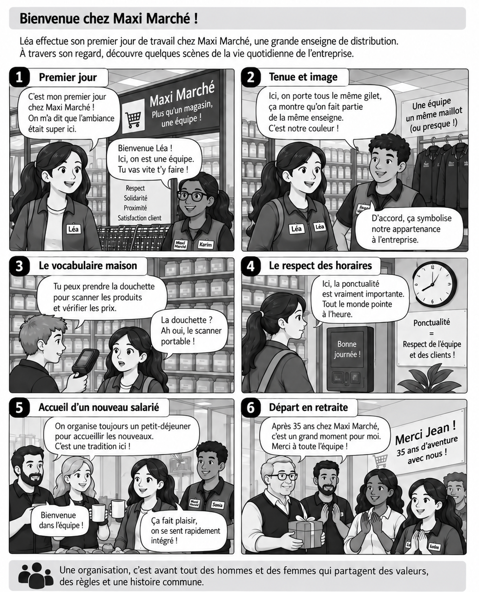 |
|---|
Question 11
Réponse sur feuille — reprenez le numéro de la question dans votre réponse. |
|---|
Afficher la correction
Associations possibles : respect, solidarité, proximité et satisfaction client = valeurs ; gilet et enseigne = symboles ; « douchette » = langage ; ponctualité et pointage = normes / règles ; petit-déjeuner d’accueil et départ en retraite = rites. Une justification doit relier l’élément observé à la définition de la composante retenue. Pour deux éléments, l’élève doit également expliquer l’effet possible sur les comportements ou les relations : par exemple, un rite d’accueil peut faciliter l’intégration, tandis qu’une norme commune peut rendre les comportements plus prévisibles.
Question 12
À partir du document n°7, montrez en quoi les différents éléments de la culture de Maxi Marché peuvent contribuer à fédérer les acteurs internes et à développer leur sentiment d’appartenance. Réponse sur feuille — reprenez le numéro de la question dans votre réponse. |
|---|
Afficher la correction
Réponse attendue : les valeurs partagées donnent des repères communs ; les symboles et le langage renforcent l’identification au groupe ; les normes rendent les comportements plus prévisibles ; les rites créent des moments collectifs et facilitent l’intégration. Ces éléments peuvent donc renforcer la cohésion, contribuer à fédérer les acteurs internes et développer leur sentiment d’appartenance.
2.6. Distinguer culture affichée et pratiques vécues
Astuce 2 – La culture de l’organisation oriente les comportements mais ne les décrète pas
| Astuce : La culture peut orienter les comportements, mais elle ne les détermine pas uniformément. Il faut aussi distinguer les valeurs affichées des pratiques réellement vécues. |
|---|
Document 8 – Culture de l’autonomie et de la confiance
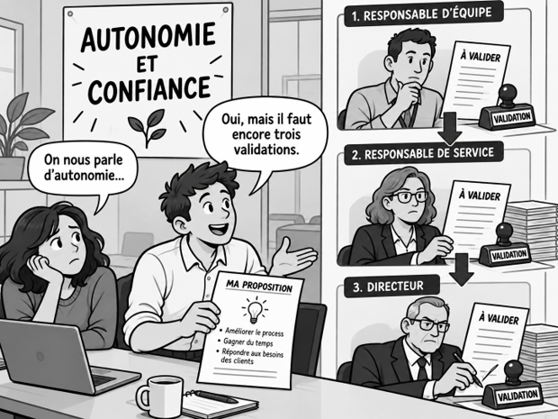 |
|---|
Question 13
Expliquez ce qu’illustre le document 8. Réponse sur feuille — reprenez le numéro de la question dans votre réponse. |
|---|
Afficher la correction
Réponse attendue : l’image illustre un décalage possible entre la culture affichée et les pratiques réellement vécues. L’organisation affirme valoriser l’autonomie et la confiance, alors qu’une proposition doit franchir trois niveaux de validation hiérarchique. Les pratiques observées restent donc davantage marquées par le contrôle que ne le laisse penser le discours affiché.
3. Coopérer : le projet EcoTrajet
3.1. Interdépendances et modalités de coopération
Document 9 – Coordonner un projet transversal chez ÉcoTrajet
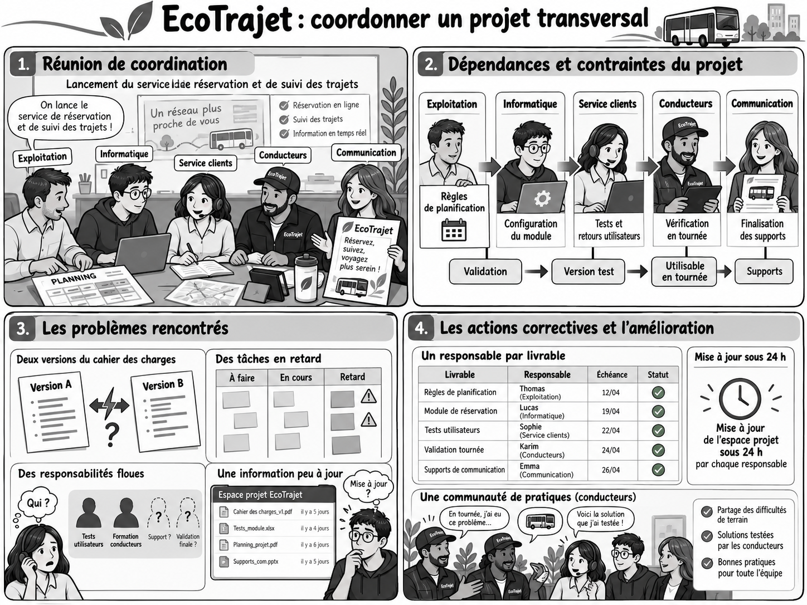 |
|---|
Notion 7 – Coopération
Coopération : action par laquelle des acteurs coordonnent des contributions interdépendantes afin de produire un résultat collectif. Elle suppose des échanges d’informations, une répartition des responsabilités, des ajustements et une coordination des tâches. Le programme cite notamment : groupes de projet, réunions, techniques de créativité, outils collaboratifs, Réseau Social d’Entreprise et communautés de pratiques. |
|---|
Question 14
À l’aide du document 9, de la notion 7 et de votre expérience, indiquez si la collaboration des membres du personnel impliqués dans le projet « ÉcoTrajet » est essentielle à sa réussite. Justifiez votre réponse. Réponse sur feuille — reprenez le numéro de la question dans votre réponse. |
|---|
Afficher la correction
Réponse attendue : Les membres du personnel impliqués dans EcoTrajet ne peuvent pas travailler de manière totalement indépendante, car leurs activités sont liées. L’informatique dépend des règles validées par l’exploitation ; le service client attend une version test ; la communication dépend de la validation des fonctionnalités ; les conducteurs fournissent des retours nécessaires à l’amélioration de l’outil. Ils doivent donc tenir compte du travail des autres, échanger des informations et coordonner leurs actions. La réussite du projet suppose donc leur collaboration et la coordination de leurs contributions.
Question 15
Identifiez quatre modalités de coopération ou de coordination mobilisées dans EcoTrajet et montrez l’utilité de chacune pour le projet. Réponse sur feuille — reprenez le numéro de la question dans votre réponse. |
|---|
Afficher la correction
Modalités possibles : groupe projet, réunion de coordination, coédition du cahier des charges, tableau numérique partagé, attribution d’un responsable par livrable, règle de mise à jour, communauté de pratiques. Pour chacune, la réponse doit relier le dispositif à une fonction : partager l’information, répartir les responsabilités, ajuster les tâches, résoudre un problème ou produire ensemble.
3.2. Conditions d’une coopération efficace
Document 10 – Tableau numérique partagé
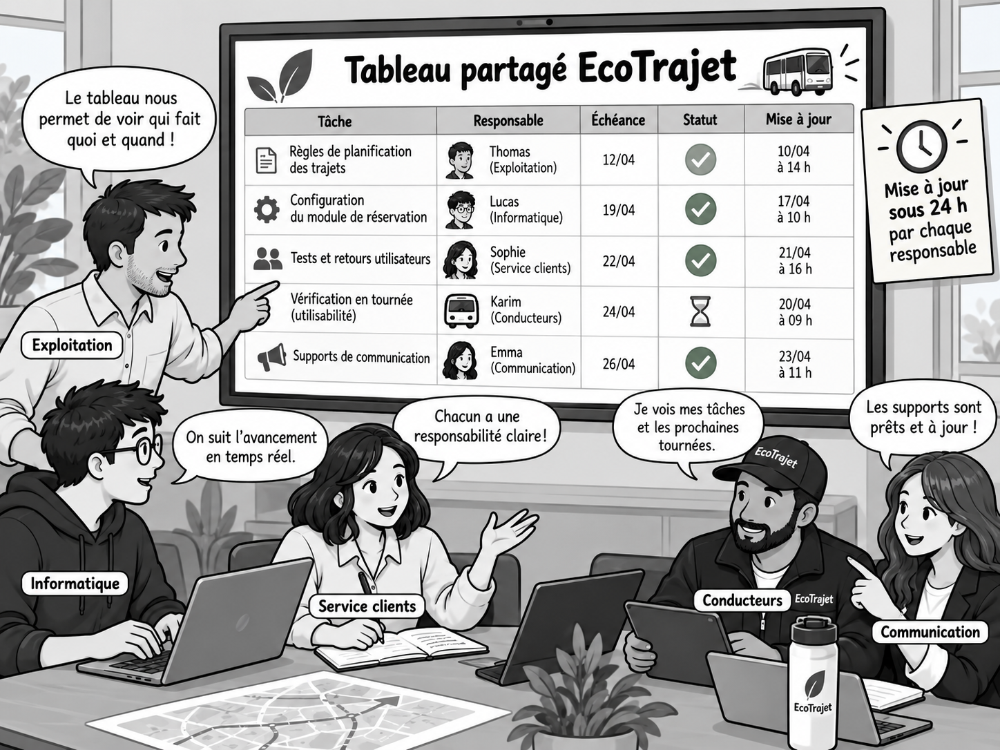 |
|---|
Question 16
Déterminez les dysfonctionnements que permet d’éviter le tableau numérique partagé, puis démontrez en quoi les solutions mises en place peuvent améliorer la coopération. Réponse sur feuille — reprenez le numéro de la question dans votre réponse. |
|---|
Afficher la correction
Analyse attendue : le tableau numérique partagé permet notamment d’éviter la circulation de versions différentes d’un même document, le manque de visibilité sur les tâches, les responsabilités, les échéances ou l’avancement du projet, ainsi que certaines pertes d’information. Les solutions mises en place — document commun, répartition claire des responsabilités, suivi de l’avancement et mises à jour accessibles — améliorent la coopération parce qu’elles facilitent la coordination, rendent l’information commune plus fiable et permettent aux acteurs de mieux ajuster leur travail à celui des autres.
3.3. Usage du numérique et coopération
Rappel 2 – Intelligence collective
Intelligence collective : capacité d’un groupe à mettre en commun des informations, des connaissances et des compétences afin de résoudre un problème, prendre une décision ou produire un résultat collectif. Un outil numérique peut soutenir l’intelligence collective, mais il ne la crée pas automatiquement : les acteurs doivent réellement partager, confronter, enrichir et réutiliser les informations disponibles. |
|---|
3.3.1. Le réseau social d’entreprise
Notion 8 – Le RSE, Réseau Social d’Entreprise
Réseau social d’entreprise (RSE) : espace numérique interne permettant aux salariés de partager des informations, poser des questions, publier des contenus et s’entraider. Communication synchrone : échange réalisé en direct entre les interlocuteurs, par exemple lors d’une visioconférence, d’un appel ou d’un échange instantané. Communication asynchrone : échange dans lequel la réponse peut être différée, par exemple par message, commentaire, publication ou fichier partagé. |
|---|
Document 11 – Réseau social d’entreprise, communication synchrone et asynchrone
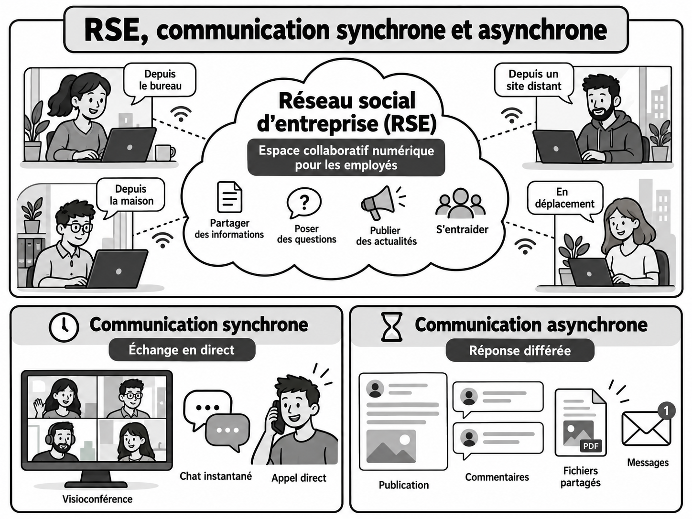 |
|---|
Question 17
À partir du document 11, distinguez communication synchrone et communication asynchrone, puis montrez en quoi un réseau social d’entreprise peut faciliter la coopération entre des salariés qui ne travaillent pas nécessairement au même endroit ni au même moment. Réponse sur feuille — reprenez le numéro de la question dans votre réponse. |
|---|
Afficher la correction
Réponse attendue : la communication synchrone suppose un échange en direct, alors que la communication asynchrone permet une réponse différée. Un RSE facilite le partage d’informations, les questions, les publications et l’entraide. Il permet donc à des salariés éloignés géographiquement ou disponibles à des moments différents de rester informés et de coordonner leurs contributions.
3.3.2. Intérêt du PGI dans la coordination des acteurs
Rappel 3 – Progiciel de gestion intégré PGI/ERP
Document 12 – Le PGI/ERP facilite la coordination
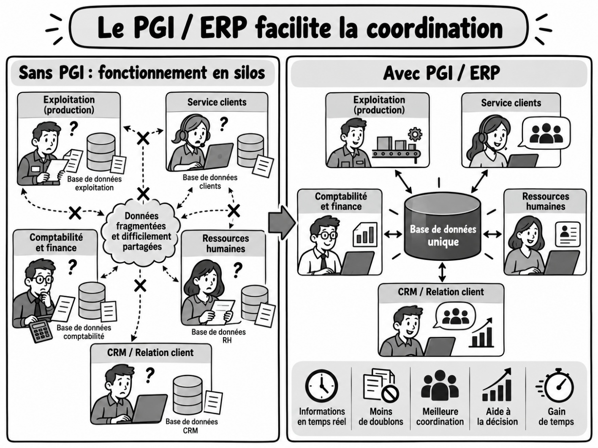 |
|---|
Question 18
À partir du document 12, expliquez en quoi la mise en place d’un PGI peut améliorer la coordination entre les différentes fonctions de l’organisation. Réponse sur feuille — reprenez le numéro de la question dans votre réponse. |
|---|
Afficher la correction
Réponse attendue : sans PGI, les services peuvent travailler avec des bases distinctes, des informations fragmentées et des doublons. Avec un PGI, les fonctions utilisent une base de données commune. Les informations sont alors plus facilement partagées et mises à jour, ce qui réduit les doublons, facilite la coordination, accélère l’accès à l’information et peut améliorer la prise de décision.
3.3.3. Apprécier l’apport du numérique à la coopération
Notion 9 – Apport du numérique dans la collaboration en entreprise
Cloud computing : mise à disposition à distance de ressources informatiques accessibles par un réseau. SaaS (Software as a Service) : mode de mise à disposition d’un logiciel hébergé par un fournisseur et distribué via un réseau. L’organisation paie généralement un abonnement ou un droit d’usage plutôt que d’acheter et d’installer le logiciel sur ses propres équipements.
Outil installé ≠ usage effectif ≠ coopération ≠ intelligence collective. La présence d’un outil ne suffit donc pas à prouver que les acteurs coopèrent réellement. |
|---|
Question 19
À partir des documents 11 et 12 et de la notion 9, montrez comment les outils numériques peuvent faciliter la coopération et la coordination dans une organisation, puis présentez une limite à leur utilisation. Réponse sur feuille — reprenez le numéro de la question dans votre réponse. |
|---|
Afficher la correction
Appréciation : les outils numériques facilitent le partage et la mise à jour des informations, les échanges synchrones ou asynchrones, le travail à distance, l’accès commun aux données et la coordination entre services. Le RSE facilite les échanges et l’entraide ; le PGI centralise des informations communes ; le cloud et les solutions SaaS rendent les ressources accessibles à distance. Ils ne créent toutefois pas la coopération à eux seuls : leur efficacité dépend de règles communes, de la fiabilité des informations, de la participation des acteurs et d’un usage réellement partagé.
4. Motivation, implication et QVCT
4.1. Qualité de vie et des conditions de travail QVCT
Document 13 – Des actions relevant de la QVCT
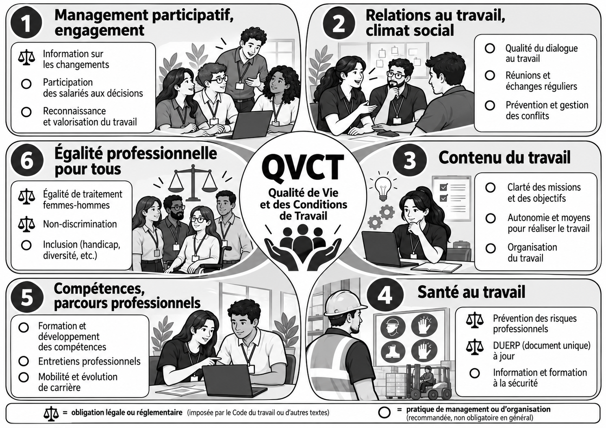 |
|---|
Document 14 – Données internes de l’entreprise Coop’Rive
Depuis deux ans, Coop’Rive a accordé davantage d’autonomie dans l’organisation des tournées, instauré une prime collective liée aux résultats de l’équipe, développé l’accès à la formation, créé des temps de reconnaissance des compétences acquises, rendu les plannings plus prévisibles et renforcé la prévention des troubles musculosquelettiques. Les attentes exprimées par les salariés restent cependant diverses. Certains souhaitent surtout conserver une marge d’initiative et exercer un travail qu’ils jugent utile. D’autres attendent une meilleure reconnaissance de leur travail et une rémunération plus attractive. Plusieurs salariés demandent aussi davantage de possibilités d’évolution, des formations accessibles et une organisation des horaires compatible avec leur vie personnelle.
Les représentants du personnel soulignent que les actions engagées sont appréciées, mais que les écarts avec le secteur restent sensibles, notamment sur la rémunération, la reconnaissance et les perspectives d’évolution. Ils rappellent également que le marché local de l’emploi et l’évolution des contrats peuvent influencer certains indicateurs. |
|---|
4.2. Facteurs de motivation
Notion 10 – Facteurs de motivation
Motivation : force ou ensemble de forces qui mettent un individu en mouvement, orientent son action et contribuent à la maintenir dans le temps. Les facteurs internes sont liés à la personne et à la manière dont elle perçoit l’activité ; les facteurs externes proviennent de son environnement et des dispositions de l’organisation. Implication : degré d’investissement d’un individu dans son travail et/ou dans l’organisation. Repère : le programme emploie le terme QVT. Le cours utilise la terminologie actuelle QVCT ; ses principales dimensions sont présentées dans le document 13. L’organisation peut créer des conditions favorables à la motivation, mais elle ne peut pas la produire mécaniquement. |
|---|
Question 20
Réponse sur feuille — reprenez le numéro de la question dans votre réponse. |
|---|
Afficher la correction
Éléments attendus : autonomie dans les tournées → marge d’initiative ; prime collective → rémunération/reconnaissance du résultat ; formation → développement des compétences ; reconnaissance des compétences → valorisation ; plannings plus prévisibles → meilleure organisation du travail ; prévention des TMS → santé et conditions de travail.
Question 21
Réponse sur feuille — reprenez le numéro de la question dans votre réponse. |
|---|
Afficher la correction
Réponse attendue : Coop’Rive peut agir directement sur des facteurs externes aux individus, par exemple la rémunération, les primes, les conditions de travail, l’organisation des horaires, l’accès à la formation, les possibilités d’évolution, les dispositifs de reconnaissance ou encore le degré d’autonomie laissé dans le travail. Pour que ces leviers soient réellement motivants, l’entreprise doit chercher à les faire correspondre aux attentes de ses salariés, qui peuvent être différentes d’un individu à l’autre.
Apport d’un style participatif : en associant les salariés aux décisions, en recueillant leurs attentes, en leur laissant une marge d’initiative et en valorisant leurs propositions, un style participatif peut aider l’entreprise à mieux ajuster ses pratiques managériales aux attentes des salariés. Il peut ainsi favoriser la motivation et l’implication, sans les garantir mécaniquement.
À retenir 2 – Comment le management peut-il fédérer les acteurs de l’organisation ?
🡺 Comment le management peut-il fédérer les acteurs de l’organisation ?
Le management peut agir sur la communication, la répartition du pouvoir et les styles de direction, la culture, la coopération et les usages du numérique, ainsi que sur les conditions liées à la motivation, l’implication et la QVCT. Ces actions visent à agir sur les comportements, l’autonomie, les interactions, la coordination, les conditions de travail et l’engagement afin de favoriser l’action collective. |
|---|
Afficher la correction
Le management peut agir sur la communication, la répartition du pouvoir et les styles de direction, la culture, la coopération et les usages du numérique, ainsi que sur les conditions liées à la motivation, l’implication et la QVCT.
Ces actions visent à agir sur les comportements, l’autonomie, les interactions, la coordination, les conditions de travail et l’engagement afin de favoriser l’action collective.
5. La coopération des acteurs internes est-elle toujours garantie ?
5.1. Dynamiques de groupe : interaction, cohésion et décision
Rappel 4 – Comportement et attitude
Comportement : manifestation observable d’un acteur. Attitude : disposition d’esprit favorable, défavorable ou neutre, que l’on ne peut qu’inférer avec prudence à partir de plusieurs indices. Un comportement isolé ne permet donc pas d’affirmer avec certitude l’attitude d’une personne. |
|---|
Document 15 – Différentes dynamiques de groupe
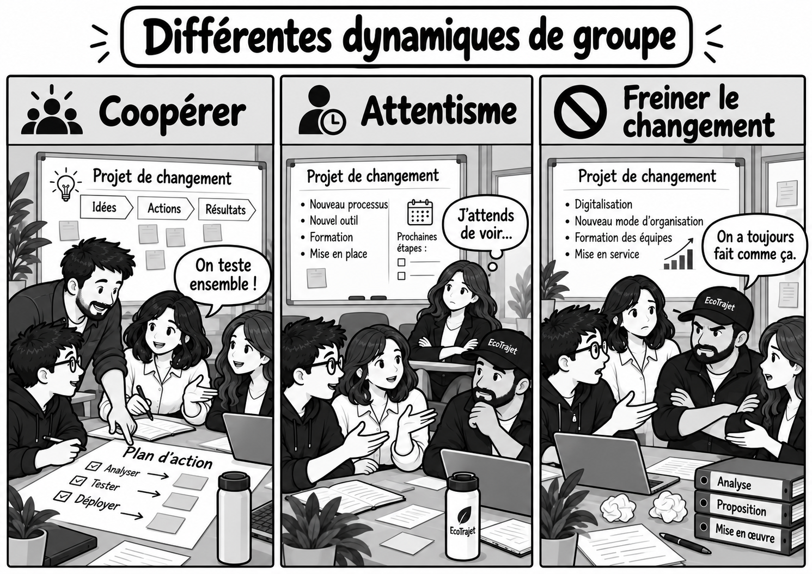 |
|---|
Question 22
Relevez les comportements observables dans les trois situations : participation, entraide, prise d’initiative, attente, retrait ou opposition. Réponse sur feuille — reprenez le numéro de la question dans votre réponse. |
|---|
Afficher la correction
Réponse attendue :
Dans la situation « Coopérer », on observe de la participation, de l’entraide et de la prise d’initiative : les membres du groupe travaillent ensemble et contribuent au plan d’action.
Dans la situation « Attentisme », certains membres participent aux échanges tandis qu’un autre reste en retrait et attend avant de s’engager.
Dans la situation « Freiner le changement », on observe des comportements d’opposition ou de résistance au projet, notamment à travers le refus exprimé de modifier les pratiques habituelles.
Ces comportements sont observables. Ils renseignent sur la dynamique du groupe, mais ils ne permettent pas, à eux seuls, d’affirmer avec certitude l’attitude interne des personnes.
Notion 11 – Dynamique de groupe
La dynamique de groupe désigne la manière dont évoluent les interactions, les rôles et les influences entre les membres d’un groupe. La coopération correspond à la mise en commun coordonnée des efforts pour produire un résultat collectif. La cohésion correspond à la force des liens et au sentiment d’appartenance qui maintiennent les membres unis. La décision de groupe peut associer les membres à des degrés différents : décision imposée (le responsable décide seul), consultation (les membres donnent leur avis mais la décision finale reste au responsable) ou décision collective / participation réelle (les membres prennent effectivement part au choix).
|
|---|
Document 16 – Trois modalités de décision dans le groupe
Situation 1 La responsable annonce directement la nouvelle organisation des tournées et demande son application. |
Situation 2 La responsable recueille les propositions de l’équipe, puis choisit seule la solution retenue. |
Situation 3 L’équipe compare plusieurs solutions et choisit ensemble celle qui sera mise en œuvre. |
|---|
Question 23
Déterminez pour chacune des situations du document 16 si elle relève d’une consultation, d’une décision imposée ou d’une décision collective. Justifiez votre réponse par un indice précis. En vous appuyant sur le document 15 et sur votre observation de la classe, qualifiez la dynamique de la classe en vous appuyant sur deux comportements observables au minimum. Réponse sur feuille — reprenez le numéro de la question dans votre réponse. |
|---|
Afficher la correction
Réponse attendue — décision : 1 = décision imposée, car la responsable décide seule et demande l’application ; 2 = consultation, car l’équipe peut proposer, mais ne décide pas ; 3 = décision collective / participation réelle, car les membres prennent effectivement part au choix final.
Réponse attendue — dynamique : la qualification doit reposer sur des comportements observables : participation, entraide, prise d’initiative, attente des consignes, retrait, opposition, circulation de l’information, etc. L’élève peut conclure à une coopération plus ou moins forte et à une cohésion plus ou moins élevée. Il peut évoquer attentisme ou résistance comme manifestations possibles, mais sans déduire avec certitude une attitude interne à partir d’un seul comportement.
Document 17 – Mettre en place des leviers de coopération ne garantit pas leurs effets
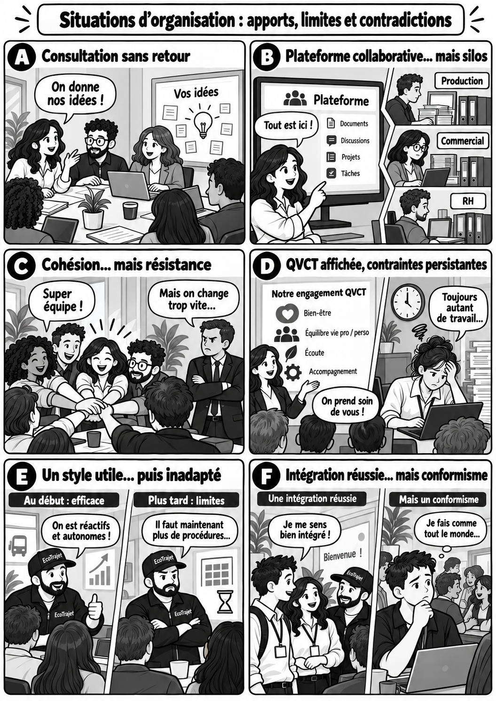 |
|---|
Question 24
À partir du document 17, montrez que la mise en place d’un levier managérial ne garantit pas à elle seule que les acteurs seront effectivement fédérés. Appuyez-vous sur au moins trois situations. Réponse sur feuille — reprenez le numéro de la question dans votre réponse. |
|---|
Afficher la correction
Réponse attendue :
La mise en place d’un levier managérial ne garantit pas automatiquement que les acteurs seront fédérés, car ses effets dépendent de la manière dont il est réellement utilisé et du contexte.
- Situation A — Consultation sans retour : les salariés sont invités à donner leurs idées, mais si aucune suite n’est donnée à leurs propositions, la consultation peut perdre son intérêt et ne pas renforcer leur implication.
- Situation B — Plateforme collaborative mais silos : disposer d’un outil commun ne suffit pas à créer de la coopération si les différents services continuent à travailler séparément et ne partagent pas réellement leurs informations.
- Situation C — Cohésion mais résistance : une équipe peut être soudée tout en refusant un changement. La cohésion du groupe ne garantit donc pas son adhésion aux objectifs de l’organisation.
- Situation D — QVCT affichée mais contraintes persistantes : l’organisation peut afficher des engagements en matière de QVCT alors que la charge de travail ou d’autres difficultés demeurent dans les pratiques réelles.
- Situation E — Style utile puis inadapté : un style de direction efficace dans une situation peut devenir moins pertinent lorsque le contexte évolue.
- Situation F — Intégration mais conformisme : une forte intégration peut favoriser le sentiment d’appartenance, mais également limiter l’expression d’idées différentes.
Il faut donc comparer les effets recherchés aux effets réellement observés et adapter les leviers au contexte. Aucun levier ne permet, à lui seul, de garantir que les acteurs seront fédérés.
À retenir 3 – Les acteurs de l’entreprise sont-ils systématiquement fédérés par les actions managériales ?
| 🡺 Les acteurs de l’entreprise sont-ils systématiquement fédérés par les actions managériales ?Complétez la synthèse avec les mots suivants : acteurs — contexte — effets — leviers — observés — recherchés.Pour fédérer les acteurs, le management mobilise différents leviers : style de direction, communication, culture, coopération, motivation, QVCT ou outils numériques.Leur présence ne garantit pas leurs effets. Leur efficacité dépend du contexte, des attentes et des comportements des acteurs, ainsi que de leur mise en œuvre réelle.Il faut donc comparer les effets recherchés aux effets réellement observés, puis ajuster les pratiques si nécessaire. |
|---|
Afficher la correction
Pour fédérer les acteurs, le management mobilise différents leviers : style de direction, communication, culture, coopération, motivation, QVCT ou outils numériques.
Leur présence ne garantit pas leurs effets. Leur efficacité dépend du contexte, des attentes et des comportements des acteurs, ainsi que de leur mise en œuvre réelle.
Il faut donc comparer les effets recherchés aux effets réellement observés, puis ajuster les pratiques si nécessaire.
6. Synthèse générale
Question 25
Construisez une carte mentale répondant à la question centrale : « Comment fédérer les acteurs de l’organisation ? » Votre carte doit organiser les principales notions du chapitre et montrer les liens entre elles. Vous pouvez notamment mobiliser : acteurs et intérêts ; pouvoir et styles de direction ; communication et coopération ; culture et leadership ; motivation et QVCT ; outils numériques ; dynamiques de groupe, cohésion et décision de groupe ; limites et contingence. Réponse sur feuille — reprenez le numéro de la question dans votre réponse. |
|---|
Afficher la correction
Une organisation possible :
Acteurs / intérêts : identifier les acteurs internes ; distinguer intérêts différents, convergents ou divergents.
Pouvoir / direction : degré de concentration du pouvoir ; styles autoritaire, paternaliste, consultatif, participatif ; contingence.
Communication / coopération : flux descendant, ascendant et transversal ; interdépendance ; coordination ; tableau numérique partagé ; RSE ; PGI.
Culture / leadership : valeurs, normes, rites, symboles, sentiment d’appartenance ; autorité hiérarchique ≠ leadership.
Motivation / QVCT : agir sur des facteurs externes en recherchant leur adéquation avec les attentes ; suivre des indicateurs RH.
Dynamiques de groupe : interactions, coopération, cohésion, leadership et degré de participation à la décision ; attentisme ou résistance peuvent décrire certains comportements observés.
Limites : aucun levier ne garantit mécaniquement ses effets ; confronter effets recherchés et effets observés, puis ajuster selon le contexte.
Liens possibles : style participatif -> motivation ; culture -> sentiment d’appartenance ; outils numériques -> coopération ; dynamique de groupe -> efficacité de l’action collective ; contexte -> pertinence des leviers.